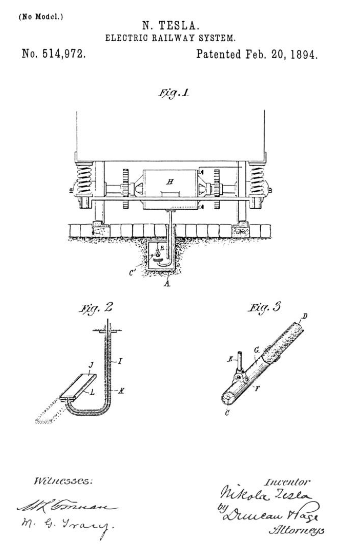

Descarga la patente original en esté enlace


Que se sepa que yo, NIKOLA TESLA, ciudadano de los Estados Unidos, que reside en Nueva York, en el condado y en el estado de Nueva York, he inventado ciertas mejoras nuevas y útiles en los sistemas ferroviarios eléctricos, de las cuales la siguiente es una especificación, teniendo como referencia los dibujos que la acompañan y que forman parte de la misma.
Esta invención es un sistema o plan mejorado para suministrar corriente eléctrica a los motores de la calle u otros automóviles o vehículos desde una fuente de suministro central o estacionaria, sin el uso de contactos deslizantes o rodantes entre el conductor de línea y los motores de los automóviles. Utilizo en mi sistema corrientes alternas o pulsantes de muy alto potencial y, principalmente por motivos de mayor economía, alta frecuencia. El conductor que transporta estas corrientes se corre desde la fuente de alimentación estacionaria a lo largo de la línea de recorrido y preferiblemente a través de un conducto construido entre o junto a las pistas o raíles.
Para evitar la disipación de la energía eléctrica que de otro modo ocurriría en un circuito que transporta corrientes del carácter que yo uso, aíslo el conductor de línea y lo rodeo con un revestimiento conductor que sirve de pantalla, y prefiero, principalmente con el objeto de localizar la acción que resultaría del establecimiento de una conexión eléctrica entre la pantalla y el suelo u otro cuerpo conductor, para dividir el conductor exterior en secciones aisladas de longitud comparativamente corta. En el automóvil, o en cada uno de los que circulan en una pista determinada, equipado de acuerdo con mi invención, coloco un brazo que lleva una placa o barra conductora que está conectada eléctricamente con las bobinas del motor y que por el movimiento del automóvil es llevado en las proximidades del conductor de línea, de modo que despegue, por acción del condensador.
Los detalles de la invención, y la mejor manera que conozco de cómo se lleva a cabo o se puede llevar a cabo, los explicaré haciendo referencia a los dibujos adjuntos.
La figura 1 es una vista que muestra una parte de un automóvil y los medios para suministrar corriente al motor del mismo desde un conductor de línea soportado dentro de un conducto entre los raíles. La figura 2 es una vista en sección ampliada del brazo que lleva el conductor a través del cual se transmite la energía eléctrica desde el conductor de línea al motor. La figura 3 es una vista ampliada parcialmente en sección del conductor de línea.
Propongo emplear un conducto de hierro A, que está enterrado preferiblemente entre los rieles de la vía y provisto de una ranura longitudinal a lo largo de su parte superior cerca de un borde o lateral. Se forma o aplica una brida B a lo largo de la ranura, formando una cámara o compartimento protegido para contener el conductor de línea. Esta cámara debe tener una forma en sección transversal que sus paredes estén dispuestas simétricamente con respecto al conductor que la atraviesa, y así reducir al mínimo cualquier efecto inductivo perturbador que se produciría por una disposición asimétrica de las paredes con respecto a la pantalla conductora o cubierta alrededor del conductor.
Para el conductor de línea utilizo un cable C adecuado, rodeado por un revestimiento aislado D, que está encerrado en un revestimiento metálico G. Para este último prefiero usar tubos de hierro provistos de orejetas perforadas F, por medio de las cuales se suspende el conductor mediante varillas aisladas u otros dispositivos E. También divido la pantalla conductora o el revestimiento en secciones aisladas entre sí, pero superpuestas para no dejar roturas en la pantalla. La ventaja de dividir la pantalla de esta manera es que se reduce la pérdida debida a las corrientes inducidas en el conductor externo, mientras que al mismo tiempo la conexión a tierra de cualquier sección resultaría en una pérdida muy pequeña en comparación con lo que ocurriría desde una vaina continua; además, al superponer los extremos de las secciones, se ofrece poca oportunidad para la disipación de energía.
El automóvil se representa llevando un motor H, que puede ser de cualquier construcción adecuada y capaz de ser accionado por corrientes del tipo empleado. Conectado con el motor o automóvil hay un tubo de hierro o conductor I, que se extiende hacia abajo en los conductos a través de las ranuras de los mismos. El extremo inferior de este tubo está doblado en forma de gancho y soporta dentro de la cámara conductora una barra o placa J que presenta al conductor de línea una superficie conductora. Esta barra o placa está conectada eléctricamente con las bobinas del motor por un hilo aislado K, que pasa por el tubo I, y todas las partes de dicha placa excepto la superficie expuesta al conductor C, o su cubierta metálica, están aisladas y protegidas. por una pantalla metálica L. Es evidente que todas las partes del brazo, así como la propia placa, pueden estar aisladas como por una cubierta impermeable.
En funcionamiento, el conductor de línea C está conectado con una fuente de corriente de muy alto potencial y gran frecuencia. Esta corriente puede transportarse a cualquier distancia deseada sin pérdida de material, ya que la cubierta metálica aislada o vaina alrededor del conductor sirve como pantalla estática para evitar la disipación de la energía. Sin embargo, la presencia de una placa J de cualquier automóvil cerca de la funda o pantalla perturba el equilibrio eléctrico y establece, por acción del condensador, una transferencia de energía desde la pantalla a la placa suficiente para hacer funcionar el motor del automóvil.
En lo anterior, he descrito la pantalla, ya sea continua o subdividida, como totalmente aislada del suelo o de los cuerpos conductores circundantes, pero la pantalla continua única o cada sección de la misma, puede conectarse al suelo a través de un condensador de relativamente muy pequeña capacidad, a través de un dispositivo de alta autoinducción o resistencia, como se muestra en líneas de puntos en C' en la Fig.1.
No reclamo en esta solicitud el conductor de línea particular descrito, ni la idea amplia de inducir desde un conductor estacionario la corriente para operar el motor en un automóvil u otro vehículo, pero;
Lo que digo es:
20 de Febrero de 1894. .
Nikola Tesla.